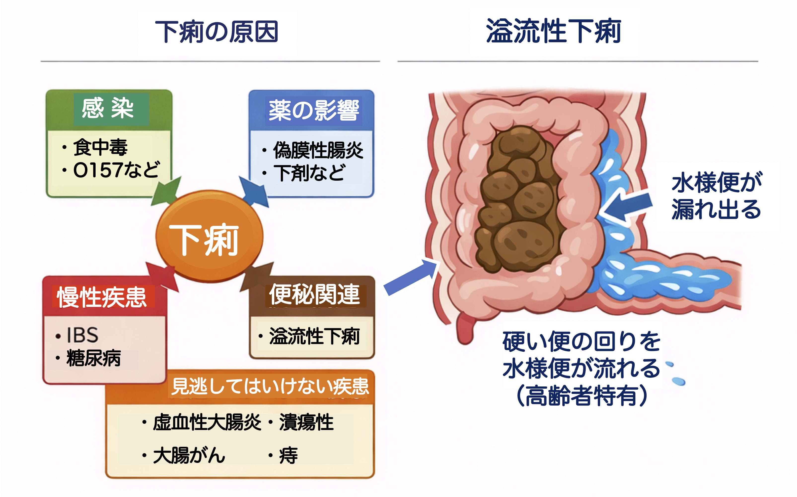
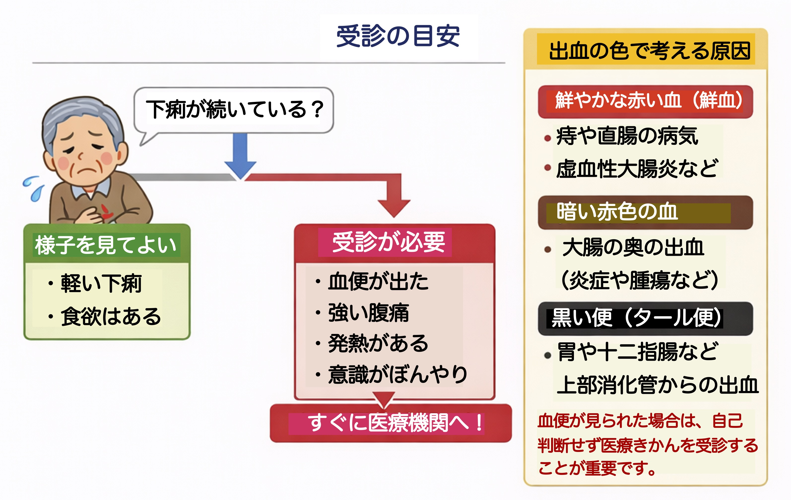

トップページに戻る
公開日：2026年7月｜最終更新：2026年7月
下痢は日常的に起こりうる症状ですが、高齢者では軽く見てはいけません。
脱水や感染症の悪化など、重篤な状態につながることがあります。
高齢者の下痢は「体調の変化のサイン」です。いつもと違う様子には注意が必要です。
第１章 下痢とは
通常よりも水分の多い便が頻回に出る状態を指します。一般的には、1日3回以上の軟便や水様便が目安とされます。
第２章 高齢者で下痢が起こりやすい理由
- 腸の動きや消化吸収機能の低下
- 腸内細菌バランスの変化
- 食事量や水分摂取の変化
- 薬剤（抗生物質・下剤など）の影響
- 慢性疾患の影響
第３章 主な原因
◼️感染性下痢（食中毒など）
細菌やウイルスによって起こる下痢です。ノロウイルスやサルモネラ菌などが代表的です。
高齢者では脱水が進みやすく、重症化することがあります。
◼️出血性大腸炎
腸管出血性大腸菌（O157など）による感染で、激しい腹痛や血便を伴うことがあります。
◼️虚血性大腸炎
腸の血流が一時的に低下することで起こります。高齢者に多く、突然の腹痛と血便が特徴です。
動脈硬化や便秘が関与することがあり、高齢者では比較的よくみられます。
◼️炎症性腸疾患
潰瘍性大腸炎やクローン病など、腸に慢性的な炎症が起こる病気です。下痢や血便が続く場合は注意が必要です。
◼️大腸がん
下痢と便秘を繰り返す、血便が続くなどの症状がみられることがあります。高齢者では特に注意が必要です。
◼️痔（じ）
肛門からの出血により、便に血が混じることがあります。比較的軽い原因ですが、他の病気との区別が重要です。
◼️薬剤による下痢
抗生物質や下剤の影響で下痢が起こることがあります。
抗菌薬使用後に起こる「偽膜性腸炎」にも注意が必要です。
◼️慢性疾患による下痢
過敏性腸症候群や膵機能低下などが原因になることがあります。

第４章 出血の色で考える原因
血便の色は重要なサイン
- 鮮やかな赤い血（鮮血）
→ 痔、直腸の病気、虚血性大腸炎など
- 暗い赤色の血
→ 大腸の奥の出血（炎症や腫瘍など）
- 黒い便（タール便）
→ 胃や十二指腸など上部消化管からの出血
血便がみられた場合は、自己判断せず医療機関を受診することが重要です。
第５章 受診の目安
- 血便がある
- 強い腹痛がある
- 発熱がある
- ぐったりしている・意識がぼんやりする
これらの症状がある場合は、速やかに医療機関を受診してください。

第６章 注意すべき合併症
第７章 家庭でできる対応
- 水分補給（経口補水液など）
- 消化に良い食事
- 安静にする
感染が疑われる場合は、自己判断で下痢止めを使用しないことが重要です。
第８章 予防のポイント
- 手洗いの徹底
- 食品の十分な加熱と適切な保存
- 不要な抗菌薬の使用を避ける
- 腸内環境を整える生活習慣
日々の小さな注意、心がけが、予防にとって重要です。
第９章 まとめ
大切なポイント
高齢者の下痢は軽く見ず、原因を見極めることが重要です。
特に血便や脱水症状がある場合は、早めに医療機関を受診しましょう。
▶ シリーズ：下痢（虚血性大腸炎について）
参考文献
- 厚生労働省：食中毒・感染症に関する情報
- 国立感染症研究所：感染性胃腸炎（ノロウイルス・O157など）
- 日本消化器病学会：消化器疾患診療ガイドライン
- 日本消化管学会：腸疾患に関する情報
- 日本感染症学会：感染症診療に関する指針
- 日本老年医学会：高齢者医療に関する提言
- 日本大腸肛門病学会：大腸・肛門疾患に関する情報
トップページに戻る